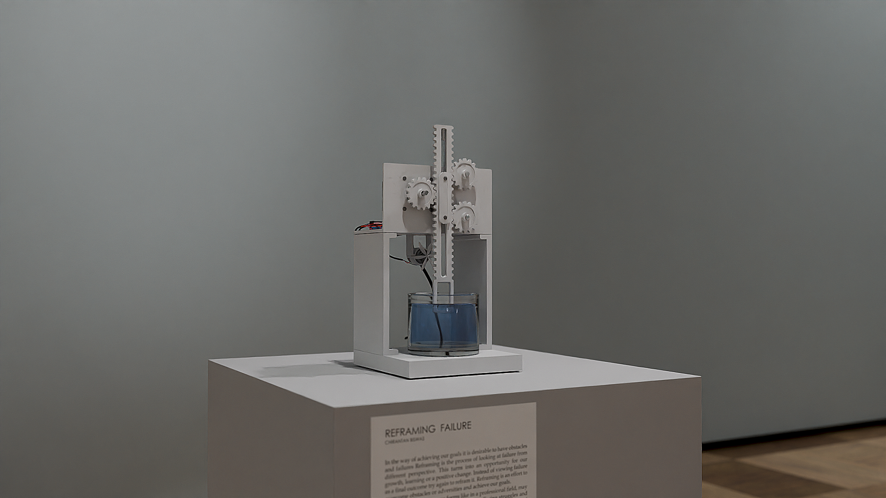

INSTALLATION ART
KINETIC SCULPTURES
REFRAMING FAILURE
2024
In the way of achieving our goals it is desirable to have obstacles and failures. Reframing is the process of looking at failure from different perspective. This turns into an opportunity for our growth, learning or a positive change. Instead of viewing failure as a final outcome try again to reframe it. Reframing is an effort to overcome obstacles or adversities and achieve our goals.
Failure can come in many forms like in a professional field, may be emotionally or related to your finance. Facing struggles and failures are a natural part of life which would lead to personal growth and strengthen ourselves.
REFRAMING FAILURE



KINETIC SCULPTURE DETAILS